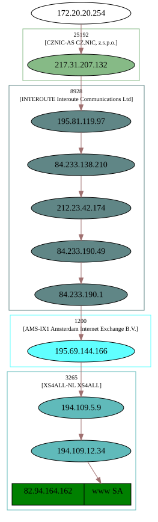
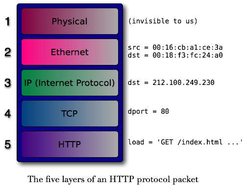

Co všechno se musí (a může) stát, aby prohlížeč zobrazil vyžádanou stránku
by Jiří Znamenáček
Úvod
Když prohlížeč zobrazuje webové stránky příslušející např. doméně http://www.python.org, z hlediska uživatele se toho zdánlivě moc nestane – prostě napíšeme do adresního řádku adresu (většinou i bez identifikace protokolu http://) a na obrazovce se nám „magicky“ objeví požadovaná stránka.
Z hlediska prohlížeče se toho ale musí (či může) stát mnohem více, než by člověk nejen na první pohled čekal. Podívejme se tomu na zoubek trošku podrobněji.
Vyrovnávací pamět („cache“)
Předně – pro někoho asi trochu překvapivě – se vůbec nemusíme dívat na skutečně aktuální podobu příslušné stránky. Někde cestou od nás k cílovému zdroji totiž může být uložena starší kopie, které dosud nevypršela doba platnosti. Konkrétně:
- Prohlížeč může požadovaný zdroj nalézt s dosud nevypršenou dobou platnosti ve své vlastní vyrovnávací paměti.
- Nebo se kopie zdroje může nacházet kdesi cestou v některé ze síťových vyrovnávacích pamětí (typicky proxy-server vašeho poskytovatele připojení).
Teprve pokud nic z výše uvedeného nenastane, stáhne se požadovaný zdroj z původního umístění.
HTTP
Dotaz k získání požadovaného zdroje je vyslán protokolem HTTP. Můžeme si ho názorně nasimulovat pomocí protokolu telnet. Přitom je třeba vědět, že (není-li uvedeno jinak) protokol HTTP je na cílovém počítači obsluhován službou (programem) naslouchajícím na portu 80. Proto (komentáře po znaku # nejsou součástí dotazu ani odpovědi!):
pirat@hotaru:~$ telnet www.python.org 80 Trying 2001:888:2000:d::a2... Connected to www.python.org. Escape character is '^]'. GET / HTTP/1.1 # příkaz protokolu HTTP (získání zdroje z umístění „/“ pomocí protokolu HTTP verze 1.1) Host: www.python.org # dodatečná hlavička dotazu (minimálně tato jedna je při verzi protokolu 1.1 povinná) ↵ # prázdná řádka (ukončuje dotaz) # nyní už následuje odpověď – nejdříve její hlavička... HTTP/1.1 200 OK Date: Wed, 01 Dec 2010 16:17:20 GMT Server: Apache/2.2.9 (Debian) DAV/2 SVN/1.5.1 mod_ssl/2.2.9 OpenSSL/0.9.8g mod_wsgi/2.5 Python/2.5.2 Last-Modified: Wed, 01 Dec 2010 11:59:27 GMT ETag: "105800d-49e3-49658097825c0" Accept-Ranges: bytes Content-Length: 18915 Connection: close Content-Type: text/html # ...a tady po další prázdné řádce samotná data <!DOCTYPE html PUBLIC "-//W3C//DTD XHTML 1.0 Transitional//EN" "http://www.w3.org/TR/xhtml1/DTD/xhtml1-transitional.dtd"> <html xmlns="http://www.w3.org/1999/xhtml" xml:lang="en" lang="en"> <head> <meta http-equiv="content-type" content="text/html; charset=utf-8" /> <title>Python Programming Language – Official Website</title> ... # zbytek dat byl vynechán # když se na otevřeném spojení jistou dobu nic neděje, je automaticky ukončeno Connection closed by foreign host.
Odpověď na dotaz obsahuje nejdříve návratovou HTTP-hlavičku (s kódem odpovědi 200, tedy že požadovaný zdroj byl skutečně nalezen a bude vrácen) a po \r\n (tedy carriage return + line feed) vlastní data (o délce 18 915 bajtů, jak je též oboje uvedeno v hlavičce).
DNS – překlad jmen na adresy
K zaslání dotazu jsme museli vědět, že HTTP-dotazy jsou na cílovém stroji obsluhovány na portu 80. Cílový stroj jsme přitom zadali pomocí jeho „lidského“ názvu. To ale není identifikace, kterou by použil počítač – ten si musel zjistit IP-adresu (ať už IPv4 nebo IPv6):
pirat@hotaru:~$ host www.python.org www.python.org has address 82.94.164.162 www.python.org has IPv6 address 2001:888:2000:d::a2
Pomocí jiného programu můžeme přijít i na to, od koho jsme danou odpověď získali:
pirat@hotaru:~$ nslookup www.python.org Server: 172.20.20.23 Address: 172.20.20.23#53 Non-authoritative answer: Name: www.python.org Address: 82.94.164.162 ;; Received 124 bytes from 194.109.9.100#53(ns2.xs4all.nl) in 17 ms
DNS-zóny, SOA-záznamy
Jak ale počítač vůbec zjistí, koho a jak se ptát?
V internetové prehistorii sloužil k překladu soubor hosts, který musel správce každého počítače připojeného do sítě pravidelně obnovovat z centrálního úložiště. Ještě dnes je tento soubor k dispozici, ale slouží už poněkud jinému účelu (pokud je vůbec nějak využit). Ale je jasné, že s přibývajícím počtem připojených počítačů to bylo neudržitelné.
/etc/hosts, na Windows pak při klasické instalaci C:\Windows\System32\drivers\etc\hosts.
Proto byl vynalezen protokol DNS (z Domain Name System). Podívejme se, jak vypadá dotaz na zjištění IP-adresy uvedené domény:
pirat@hotaru:~$ dig python.org any +multiline ; <<>> DiG 9.7.0-P1 <<>> python.org any +multiline ;; global options: +cmd ;; Got answer: ;; ->>HEADER<<- opcode: QUERY, status: NOERROR, id: 5241 ;; flags: qr rd ra; QUERY: 1, ANSWER: 6, AUTHORITY: 2, ADDITIONAL: 1 ;; QUESTION SECTION: ;python.org. IN ANY ;; ANSWER SECTION: python.org. 18000 IN AAAA 2001:888:2000:d::a2 python.org. 18000 IN A 82.94.164.162 python.org. 18000 IN SOA ns.xs4all.nl. hostmaster.xs4all.nl. ( 2010112900 ; serial 21600 ; refresh (6 hours) 7200 ; retry (2 hours) 604800 ; expire (1 week) 86400 ; minimum (1 day) ) python.org. 18000 IN MX 50 mail.python.org. python.org. 18000 IN NS ns.xs4all.nl. python.org. 18000 IN NS ns2.xs4all.nl. ;; AUTHORITY SECTION: python.org. 18000 IN NS ns2.xs4all.nl. python.org. 18000 IN NS ns.xs4all.nl. ;; ADDITIONAL SECTION: ns2.xs4all.nl. 15715 IN A 194.109.9.100 ;; Query time: 18 msec ;; SERVER: 172.20.20.23#53(172.20.20.23) ;; WHEN: Wed Dec 1 17:52:58 2010 ;; MSG SIZE rcvd: 228
Vysvětlivky:
-
Příznak
anyvrátí odpověď na všechny možné dotazy, které je možno položit. -
Příznak
+multilineslouží (pouze) k úpravě výpisu SOA-záznamu do čitelnější podoby (kde SOA = Start Of Authority, tedy autoritativní údaje o příslušné DNS-zóně). -
AAAAje IPv6-adresa. -
Aje IPv4-adresa. -
MXje odkaz na emailový server pro danou doménu. -
A konečně
NSje Name Server, tedy počítač starající se o správu DNS-záznamů příslušné domény (nebo obecněji zóny).
Hierarchie DNS-serverů I
Správa jmen na internetu je rozdělena podle logické úrovně – jiné stroje mají na starosti doménu nejvyšší úrovně (TLD = Top Level Domain) org, jiné zase doménu druhé úrovně python (pod doménou org) a případné jiné stroje další poddomény.
.“, která se nachází na konci doménového jména (tj. např. docs.python.org.), ale pro většinu praktických účelů se nepoužívá (v řídících záznamech DNS je ovšem životně důležitá, protože jinak by jména byla vyhodnocována jako relativní).
Přitom stroje spravující doménu jisté úrovně „ví“, kam (na jaké další DNS-stroje) mají přesměrovat dotazy na nižší podúrovně. Každá část této veliké a značně distribuované databáze se tak „stará“ pouze o svoji příslušnou podčást všech doménových jmen.
Kdyby každý překlad doménového jména na IP-adresu šel celou touto cestou od kořene až po poslední DNS-server, bylo by to strašlivá zátěž na všechny stroje po cestě a především na stroje starající se o kořenovou zónu. Ve skutečnosti se získané odpovědi ukládají do mezipamětí (vyrovnávacích pamětí, cache) spolu s údajem, do kdy jsou platné. Dotaz na překlad pak „probublá“ výše pouze tehdy, není-li příslušné jméno k dispozici v nějakém bližším DNS-serveru.
Hierarchie DNS-serverů II
Jak tedy vypadá celý stromeček DNS-serverů zodpovědných za překlad uvedeného jména na IP-adresu?
pirat@hotaru:~$ dig www.python.org +trace ; <<>> DiG 9.7.0-P1 <<>> www.python.org +trace ;; global options: +cmd . 2239 IN NS i.root-servers.net. . 2239 IN NS b.root-servers.net. . 2239 IN NS g.root-servers.net. . 2239 IN NS e.root-servers.net. . 2239 IN NS c.root-servers.net. . 2239 IN NS j.root-servers.net. . 2239 IN NS k.root-servers.net. . 2239 IN NS m.root-servers.net. . 2239 IN NS f.root-servers.net. . 2239 IN NS d.root-servers.net. . 2239 IN NS h.root-servers.net. . 2239 IN NS a.root-servers.net. . 2239 IN NS l.root-servers.net. ;; Received 228 bytes from 172.20.20.23#53(172.20.20.23) in 0 ms org. 172800 IN NS b0.org.afilias-nst.org. org. 172800 IN NS b2.org.afilias-nst.org. org. 172800 IN NS c0.org.afilias-nst.info. org. 172800 IN NS d0.org.afilias-nst.org. org. 172800 IN NS a2.org.afilias-nst.info. org. 172800 IN NS a0.org.afilias-nst.info. ;; Received 434 bytes from 192.203.230.10#53(e.root-servers.net) in 190 ms python.org. 86400 IN NS ns.xs4all.nl. python.org. 86400 IN NS ns2.xs4all.nl. ;; Received 76 bytes from 2001:500:e::1#53(a0.org.afilias-nst.info) in 296 ms www.python.org. 86400 IN A 82.94.164.162 python.org. 86400 IN NS ns2.xs4all.nl. python.org. 86400 IN NS ns.xs4all.nl.
Vidíme, že:
- O kořenovou zónu, tj. „tečku“, se stará 13 rozdílných logických strojů (které jsou rozeseté po celém světě a navíc samozřejmě každý z nich představuje celou armádu počítačů se stejnou adresou, které odpovídají na anycastové-dotazy podle nejvýhodnější aktuální dostupnosti).
-
Tyto nás přepošlou na 6 logických strojů, které mají na starosti doménu nejvyšší úrovně
org. -
Odtud už se dostaneme na name-servery, které obhospodařují doménu druhé úrovně
python(jako subdoménu doményorg). A vidíme, že se o to nestará organizace Python Software Foundation (která má jinak doménu python.org na starosti, jak bychom zjistili dotazemwhois python.org), ale poskytovatel jejího internetového připojení XS4ALL. Není tudíž divu, že.. -
..adresování uvnitř domény
python.org(tedy rozlišení mezi doménami třetí úrovně jako jsou např.www.python.orgnebodocs.python.org) má na starosti také on.
Intermezzo
Nyní už známe většinu částí „vysokoúrovňové“ komunikace na úrovni protokolu HTTP: Pro získání vstupní HTML-stránky na adrese http://www.python.org potřebujeme zaslat HTTP-dotaz (nezapomínejme na povinnou ukončovací prázdnou řádku)..
GET / HTTP/1.1 Host: www.python.org ↵
GET) kořenový dokument (/) pomocí protokolu HTTP 1.1, zaslaná dodatečná hlavička Host: www.python.org.
..na port 80 (základní port HTTP-protokolu) stroje identifikovaného IP-adresou 82.94.164.162 (kterou získáme z DNS překladem jména www.python.org).
Cesta dat po síti
Uvedený text HTTP-dotazu na port 80 je ovšem teprve začátek – daný dotaz se totiž musí dostat z našeho počítače (který má také svoji IP-adresu) na počítač cílový, kde bude vyhodnocen, a příslušná odpověď (zde vstupní HTML-stránka) bude vrácena na náš počítač, kde bude zobrazena. A tohle všechno dohromady není vůbec jednoduché:
- Už na první pohled je zřejmé, že výsledkem dotazu může být enormní množství dat (např. video z YouTube.com) – zřejmě uvedená data nebudou přenášena všechna najednou jako jeden „balík“.
- Za druhé data musí „téct“ po nějakém přenosovém médiu (což mohou být klasické nebo optické kabely, ale stejně tak dobře třeba vzduch).
-
A za třetí mezi naším a cílovým počítačem téměř určitě (pokud to zrovna není kupříkladu náš přístupový bod do internetu) není přímá linka, data tudíž „tečou“ přes mnoho dalších síťových zařízení či počítačů. Zde je graficky (za pomoci programu Scapy) zobrazena jedna z možných cest:

Hierarchie protokolů
Data na internetu si postupně předávají jednotlivé služby, které se starají o jejich přeposílání mezi zainteresovanými koncovými uzly:
- Za „logické“ adresování (tj. od nás ke zdroji a zpět) je zodpovědný protokol IP (Internet Protocol).
- Za rozložení dat na menší kousky (a pak zase jejich zpětné složení) plus jejich směřování na konkrétní službu je zodpovědný protokol TCP (Transmission Control Protocol).
- Vlastní přeposílání těchto kousků mezi jednotlivými fyzickými zařízeními na cestě pak má na starosti protokol příslušné fyzické, spojovací vrstvy – pro případ „obyčejného“ síťového kabelu je to nejčastěji Ethernet.
TCP/IP aneb „Život datového packetu“
Podívejme se na (zjednodušený) souhrnný diagram „cesty“ jednoho konkrétního HTTP-dotazu:

Od protokolu nejvyšší úrovně (HTTP) až po vlastní přenos signálu (fyzická vrstva) se odehraje následující:
-
Na nejvyšší vrstvě (aplikační vrstva) prohlížeč pomocí protokolu
HTTPvyšle dotaz, resp. přijme odpověď, v podobě konkrétně formátovaného řetězce (výše uvedený kód s GET jako dotaz, HTTP-hlavička a HTML-podoba stránky plus obrázky atp. jako odpověď). -
Na TCP-úrovni (transportní vrstva) jsou přenášená data „rozsekána“ na menší kousky, které jsou „zabaleny“ do „krabice“ (tzv. paket, z anglického packet) s označením pořadového čísla (zjednodušeně řečeno; ale obecně si protokol
TCPhlídá, zda a v jakém stavu dorazily všechny odeslané pakety a případný ztracený paket si vyžádá znovu) a mimo jiné portu cílové služby (což je 80 pro protokolHTTP, není-li určeno jinak). -
Na IP-úrovni (síťová vrstva) je TCP-paket z předchozí vrstvy zabalen do IP-paketu, který se stará o logické adresování v rámci internetu (tj. z jaké a na jakou IP-adresu byla vyslána příslušná data), ale též o to, aby se pakety po netu netoulaly nekonečně dlouho (pomocí pole
TTL= Time To Live; viz další bod). -
Na předposlední vrstvě nad vlastními kabely (nebo jiným médiem; jde o tzv. vrstvu síťového rozhraní) se odehrává fyzické adresování – přeposílání IP-paketů mezi jednotlivými fyzickými zařízeními na cestě mezi oběma komunikujícími počítači. Každý další počítač v cestě rozbalí ethernetový paket určený jemu (paket si nese hardwarovou adresu, tzv. MAC-adresu, následujícího počítače v řetězci síťových zařízení; k jejich nalezení v rámci místní sítě slouží pro IPv4 protokol ARP a pro IPv6 protokol
NDP) a podívá se dovnitř na zabalený IP-paket:- Je-li určený jemu (odpovídá cílová IP-adresa), rozbalí IP-paket a předá uvnitř se schovávající TCP-paket na příslušnou službu (port).
- Není-li určený jemu (cílová IP-adresa není jeho vlastní), zmenší pole TTL o jedničku a zabalí takto upravený IP-paket do nového ethernetového rámce (v němž je startovní MAC-adresou jeho vlastní a cílovou pro něj následující síťový stroj).
- Tyto poslední pakety – v našem případě ethernetové – jsou pak fyzicky přenášeny po nejrůznějších kabelech a skrz nejrůznější propojovací koncovky a další zařízení. Každé konkrétní „zasíťování“ má vlastní protokoly a způsoby přenosu, které nás už nemusí příliš trápit.
Doplněk 1 – „3-way handshake“
Výše popsaný princip zachycuje cestu jednoho konkrétního paketu, ale vlastní TCP-komunikace je podstatně složitější. V principu se dá rozložit na tři stupně:
- navázání spojení; probíhá také třífázově – klient požádá o spojení (tzv. SYN-paket), server vrátí potvrzení požadavku (paket SYN-ACK), klient potvrdí jeho přijetí (ACK-paket)
- vlastní přenos dat
- ukončení spojení
Doplněk 2 – UDP
Kromě výše uvedených protokolů můžete také někdy zaslechnout zkratku UDP (User Datagram Protocol):
V podstatě jde o protokol srovnatelný s TCP, ale narozdíl od něj zaručuje pouze integritu paketů (pomocí kontrolního součtu), nikoli už jejich doručení.
TCP tedy zaručuje, že pakety dorazí v pořádku a všechny, protokol UDP pak pouze to, že pokud vůbec dorazí, tak budou v pořádku.